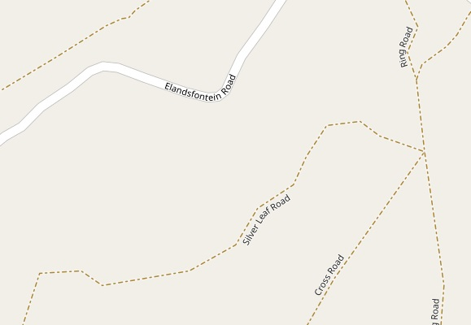

SoS SMS
Rescuing drivers in distress is a common need in nature reserves, where roads are often rough and demanding. SoS SMS is a family of three smartphone apps that work together to help a driver stranded in a nature reserve to get assistance. The request goes from the stranded driver to a rescue hub, which forwards it to the rescue driver best positioned to render assistance to the stranded driver. The request automatically includes the stranded driver's location as determined by satellite based geolocation, to assist the rescue effort.
The three apps are:
All of the programs that make up the SoS SMS family are available free of charge for anyone to use and modify as they see fit, as open source
This section illustrates how the various apps in the SoS SMS family could be used to rescue a driver in distress.
Classic phone apps require the user to find and install the app before it is needed. And then remember what it is called when the need for it arises. For frequently used apps, this is perfectly fine. If a particular rescue hub chooses to use the SoS SMS app family then they will surely install the hub's app on a designated phone in the hub. But caller's app is different. It is used only in emergencies. Drivers seldom set out with the intention of getting stuck, so we must assume that few will have found and installed the caller's app in anticipation of needing it.
Rescue drivers will know if their rescue hub uses the hub app, and can be expected to pre-install the rescue driver's app. But drivers may take leave or fall ill, and other drivers may be brought in at short notice. They may not have installed the rescue driver's app before needing to use it.
For these reasons, the SoS SMS app family is implemented using the newer Progressive Web App (PWA) technology (see here). Once installed, a PWA behaves exactly like a classic phone app. It can be launched by clicking on its icon on the home screen. But casual users can use PWAs immediately, without first having to find them in a web store and install them. All they need is a link to the app in question, and a web browser on their phone. Which is standard. More frequent users like the rescue hub and rescue drivers can easily install their respective apps in advance of needing to use them, put a launch icon on their home screen, and open it instantly when needed.
And when messages flow from one member of the SoS SMS family to another, they include links which, if clicked, will automatically open the appropriate app on the receiver's phone, if installed, or otherwise open the app in the receiving phone's web browser. It is seldom that a user will have to find and open the app that they need. The system is designed to be simple and robust.
After being used a few times, each app should offer to install itself on the user's phone. This process can be speeded up, as described below for various phone types.
A trial implementation of the SoS SMS family of apps is available for evaluation at https://tijaska.co.za/sos/. This is a development server, and it is often taken down to implement and test new software components. This makes it completely unsuitable to support a live production system that may play an important role in the rescue of stranded drivers.
Anyone who wants to use the SoS SMS software is free to do so, but they need to find a web server operator who is willing to host it for them. The packaged web app can be downloaded from ??.
Smartphone apps and web apps are usually designed to interact with programs that run on web servers. A large number of different programming languages are used to code the web server programs. No one web server supports all of these languages. In order to support as wide a range of web servers as possible, so that users have freedom in choosing web service providers or providing their own, the SoS SMS app family has been designed and developed to run without the need for any server-side application programs of its own. The required application logic is built into the web pages that make up the family. They communicate with one another using SMS or WhatsApp technologies, which are universally available. SMSes are cheap, and WhatsApps are free.
You can access, test, and optionally install the three apps that make up the SoS SMS family here:
The SoS SMS apps offer three different map types to show where the stranded driver is located.
This is the familiar default type of map offered by Google Maps. It works very well for towns and cities where it's easy to tell what is a road and what is not. It works less well in nature reserves where many of the roads may be dirt tracks. Some roads won't show as roads at all, or only in patches. Google Maps should be able to give good navigation advice while the rescue driver is traveling on bigger roads, but if it doesn't recognize the smaller roads then it will be unable to give turn-by-turn directions in those areas.
By way of example, the street map displayed here comes from here
It shows some of the small roads in a game reserve, but not many compared to the satellite view below.
It turns out that the human eye is pretty good as picking out dirt tracks. The Google navigation advice won't be any different from what it is in street view, but the rescue driver should be able to see and follow a route once the larger roads peter out.
The same area shown above is shown here in satellite view
here
Far more roads can be seen. Even rainwater runoff channels are visible.
OpenStreetMap is very similar to Google Maps street view in appearance, but seems to do a better job of picking out smaller secondary roads. It can either run in a browser window, or the user can download and install the app as one does Google Maps. The advantage of having the app installed is that it offers turn-by-turn navigation, in the same way as Google Maps does.
OpenStreetMaps makes it easy for the user to edit the map, adding road and place names, even adding smaller roads that the OpenStreetMap scanning process may have missed. It is easy to run a companion app called OSMTracker while traversing roads in an area of interest. This app uses geolocation to record the physical route followed, and hence the actual course of the road. See here
